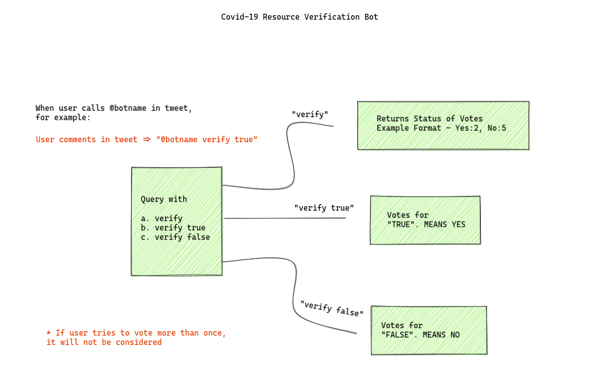

You need to enable JavaScript to run this app.
COVID-19 Resource Verification bot
Please note that this bot is unofficial and its simply made for verification check purpose
3 simple commands
-
"@covid_src verify "
(This gives you overall verification votes for resource)
-
"@covid_src verify true "
(this registers "true" vote for resource verification)
-
"@covid_src verify false "
(this registers "false" vote for resource verification)
How it works
